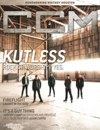

CCM Digital, Mar 2012
| Cover |
|---|
|  |
 Online Exclusively Online Exclusively |
| Writers in this Issue |
| Argyrakis, Andy Aspinwall, Grace S. Assad, Audrey Camp, Jeremy Conner, Matt Greer, Andrew Huguley, Kevin Jackson, Tom Jamison, Joshua Lusk, Caroline Siler, Steve Tasker, Nathan |
Kutless
Cover Feature:- "Rock or Worship? Yes" by Andy Argyrakis
- "On Their Knees: Truth, Authenticity, and the new faces of Worship" by Matt Conner
- "Caught in the Now" by Caroline Lusk
- "It's a Guy Thing" by Jeremy Camp
- "Remembering Whitney Houston"
Worship:
- "Same Love, Different Man" by Caroline Lusk
- "God Has Moved With Less" by Joshua Jamison
- "Breathe In"
- Tidewater by Andy Argyrakis
- Dave Barnes by Matt Conner
- "James Fortune" by Matt Conner
- Sarah MacIntosh by Matt Conner
- Worth Dying For by Andy Argyrakis
- Andy Cherry by Andy Argyrakis
- "Room for Interpretation" by Steve Siler
Album Review:
- Andy Cherry - Nothing Left to Fear by Grace S. Aspinwall
- Jeremy Horn - Sound of the Broken by Andrew Greer
- All Sons and Daughters - Reason to Sing, EP No. 2 by Andrew Greer
- various artists - Word: Six Decades of Hits by Andrew Greer
- Phillips, Craig, and Dean - Breathe In by Grace S. Aspinwall
- Twila Paris - God Shed His Grace by Grace S. Aspinwall
- Tidewater - The Beautiful Life by Andy Argyrakis
- Fireflight - Now by Matt Conner
- Adam Cappa - The Rescue by Matt Conner
- Sent by Ravens - Mean What You Say by Matt Conner
- Worth Dying For - Live Riot by Matt Conner
- Jenn Bostic - Change by Andy Argyrakis
- Julie Lee - Julie Lee & the Baby-Daddies by Andy Argyrakis
- Kirk Franklin - Setlist: The Very Best of Kirk Franklin Live by Andy Argyrakis
- Brian Courtney Wilson - So Proud by Andrew Greer
- Amber Bullock - Thank You EP by Andrew Greer
- The Fray - Scars and Stories by Matt Conner
- John Berry - RealMan.RealLife.RealGod. by Andy Argyrakis
- Katrina Stone - Spellbound by Andy Argyrakis
- "Now and Then Tour, The Venue, Hammond, IN" by Andy Argyrakis
- "I Can't Get No..." by Kevin Huguley
- "Home... and a Vegemite Sandwich, Please" by Nathan Tasker
- "Myths About the Live Show - Part 1" by Tom Jackson
© 2011 CMnexus. Last updated April 2021. Contact: editor -AT- cmnexus -DØT- org About